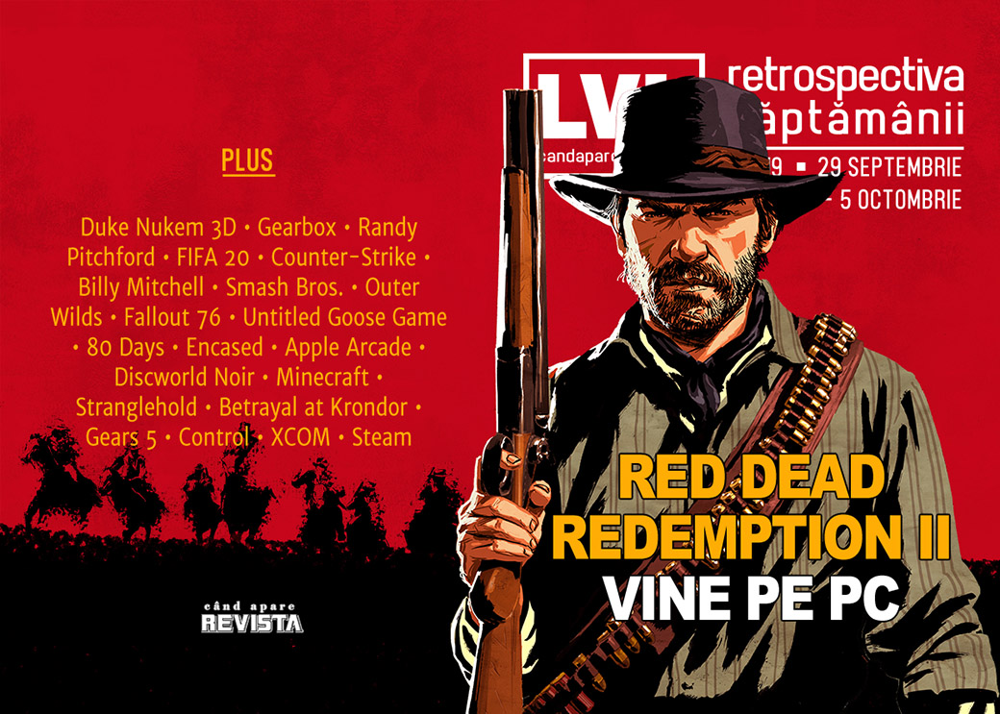

Retrospectiva săptămânii 29 septembrie - 5 octombrie
Marile companii de jocuri cer ajutoare de la guvernul britanic, Randy Pitchford e din nou subiect de știre din cauza proceselor, EA scurge datele jucătorilor, aflăm cum s-au făcut Discworld Noir și Betrayal at Krondor, s-au anunțat două jocuri românești noi și, în caz că n-ați văzut coperta, Rockstar aduce Red Dead Redemption II pe PC.
Linkuri rapide:
- Știri
- Articole (critică, dev, design)
- Made în România
- Anunţuri şi lansări de jocuri
- Prăvălii de jocuri

Știri
- Compozitorul care a făcut muzica pentru Duke Nukem 3D, și pentru care își păstrase drepturile de autor, i-a dat în judecată pe Gearbox și CEO-ul său Randy Pitchford, precum și Valve, din cauza jocului Duke Nukem 3D: 20th Anniversary World Tour, care a fost lansat cu muzica originală fără acordul compozitorului și fără plata drepturilor de autor. (PC Gamer, GamesIndustry.biz, Destructoid, Polygon, VG247)
- În altă ordine de idei, Randy Pitchford și avocatul său Wade Callender au ajuns la o înțelegere pentru a stinge toate litigiile pe care și le deschiseră reciproc.(Eurogamer, Polygon, PC Gamer, Kotaku, GamesIndustry.biz, Destructoid)
- Un raport publicat de The Guardian arată cum mari companii de jocuri, precum Sony, Sega sau Warner au obținut de scutiri de taxe importante în Marea Britanie abuzând de prevederile laxe ale unui program de ajutorare guvernamental destinat în principal micilor producători de jocuri (The Guardian). (TL;DR pe VG247, VideoGamer)
- Site-ul creat de EA pentru înscrierile la competiția FIFA 20 Global Series a avut scurgeri de informații, datele personale a peste 1600 de jucători fiind disponibile public până când site-ul a fost oprit pentru investigații. (GamesIndustry.biz, PC Gamer, Polygon)
- Jucătorii de Counter-Strike din Franța au la dispoziție un instrument creat de Valve pentru a vedea conținutul cutiilor înainte de a le deschide. (Counter-Strike.net, PCGamesN, VG247, Game World Observer)
Articole (critică, dev, design)
- The Split-Screen Man (EGM)
- Scientists Want You to Play a Video Game to Help Them Understand Nuclear War (Vice)
- Flash vs. HTML5 and the future of browser gaming (Destructoid)
- Jam Sesh: How a Popular Online Contest Sparks Design Innovation (EGM)
- How a 14-Year-Old Designer Became Part of Apple's Splashy New Gaming Service (Vice)
- Crafting In Games Feels Less Like A Chore Now (Kotaku)
- The Smash Bros. community: An oral history (Polygon)
- See 50 glorious years of PC history at the new Computer Museum of America (PC Gamer)
- When “easy mode” isn’t enough: An analysis of unclear lessons in video games (Ars Technica)
- Games can be our time machines (Eurogamer)
Not-a-review
- Untitled Goose Game reveals the true power fantasy all gamers want (Polygon)
- Untitled Goose Game Subverts Stealth Gameplay (Unwinnable)
- Due Diligence: The End Ain’t Nigh Enough (Haywire Magazine)
- Fallout 76’s doctor is the hero that video games deserve (Polygon)
- The Diversity In 80 Days Shocked Me, In A Good Way (Kotaku)
- The Legend of Zelda is teeming with Celtic mythology (Eurogamer)
- Encased is an Early Access RPG that’s worth starting right now (RPS)
Industrie
- Apple Arcade is a home for premium games that lost their place on mobile (The Verge)
- Apple Arcade is a short-term fix with far reaching consequences (GamesIndustry.biz)
- Acquisition and conversion costs threaten a mobile bust (GamesIndustry.biz)
- Why Microsoft is investing so heavily in the Age of Empires series (PCGamesInsider.biz)
- Activision is Keen for More Remasters, But What Else Does It Have Left? (Kotaku)
- Five misconceptions about the Chinese games market (GamesIndustry.biz)
- Every game company that Tencent has invested in (PC Gamer)
Istorie, retrospectivă
- The making of Discworld Noir (Eurogamer)
- 10 years on and 20 more to go - Mojang on the present and future of Minecraft (Eurogamer)
- Woo-Hoo! The Making of Stranglehold (Kotaku)
- Betrayal at Krondor (The Digital Antiquarian)
Dev, making of, mecanici
- The remarkably true story of how many people it took to make ice break in Gears 5 when it’s shot with a gun (Polygon)
- Q&A: How composer Petri Alanko created the otherworldly score for Control (Gamasutra)
- A Deep Dive Into XCOM and XCOM 2 (Gamasutra)
Design, world-building, artă
- Players Are Recreating Famous Album Covers In Fallout 76 (Kotaku)
- Game Box Art Critique October: Luigi’s Mansion 3, Call of Duty: Modern Warfare, The Outer Worlds (VideoGamer)
- Aces Higher (Kotaku)
- Rogue Leader, Standing By (Kotaku)
Made în România
- Tiny Trinket Games anunță Zoria: Age of Shattering, un RPG party-based ce va apărea în 2020. (TechRaptor)
- Bearded Giant Games anunță Ebony Spire 2: Godless. (Zona IT)
Anunţuri şi lansări de jocuri
Anunţate
- My Hero One’s Justice 2 (EGM)
- Rebel Inc: Escalation (Eurogamer)
- Six Temples (Shacknews)
- Adventure in Aellion (TechRaptor)
- Yes, Your Grace (Eurogamer)
- Martha is Dead (Eurogamer)
- Remakes pentru House of the Dead 1 & 2 (Destructoid)
- Broken Roads (PC Gamer)
- Zoria: Age of Shattering (TechRaptor)
- Ebony Spire 2: Godless (Zona IT)
- Red Dead Redemption 2 vine în sfârșit și pe PC (PC Gamer)
Acum cu dată de lansare
- The Bradwell Conspiracy: 8 octombrie (Eurogamer)
- Magequit: 9 octombrie (GameSpace)
- Stranded Sails: 17 octombrie (Shacknews)
- A Year Of Rain: 6 noiembrie (early access) (RPS)
- Arise: A Simple Story: 3 decembrie (PC Gamer)
- Death Trash: începutul lui 2020 (PC Gamer)
Lansate
- 1 octombrie: What the Golf? (Epic Store)
- 1 octombrie: Destiny 2 vine pe Steam (Steam)
- 1 octombrie: Destiny 2: Shadowkeep (Steam)
- 1 octombrie: Alien Squatter (Steam)
- 2 octombrie: Warsaw (Steam)
- 3 octombrie: The Wild Eight (early access) (Steam)
- 3 octombrie: Close Combat: The Bloody First (Steam, gog.com)
- 3 octombrie: Neo Cab (Steam)
- 4 octombrie: Ghostbusters Remastered (Epic Store)
- 4 octombrie: Ghost Recon Breakpoint (Epic Store)
Prăvălii de jocuri
Știri
- PlayStation Now Price Drops To $10 A Month, Adds New Games (Kotaku)
- Atari: Antstream Arcade to bring thousands of retro games to Atari VCS console (VentureBeat)
Articole
- Steam has a lack of data scientists (Gamasutra)
- Reselling Video Games In A Digital World [Industry Contributor] (GameDaily.biz)
- The first successful cloud gaming platform could make billions (PC Gamer)
Update catalog
- October’s Xbox Game Pass titles include Dishonored 2 and World War Z (VideoGamesChronicle)
Jocuri gratis și free weekends
- Get Origin Access Basic free for a month by enabling two-factor authentication (PC Gamer)
- Gang Beasts, Gonner and more going cheap in a Steam charity sale (RPS)
- Minit is now free on the Epic Games store, Surviving Mars is up next (VideoGamesChronicle)
- Battalion 1944 Free To Play Weekend Now On (GameSpace)
Reduceri și promoții
- New Humble Bundle is for One Special Day (TechRaptor)
- Best PC gaming deals of the week – 4th October 2019 (RPS)
- GOG is celebrating its 11th anniversary with a huge sale (PC Gamer)
- Crash, Spyro and COD: WW2 are just £10/$12 in the latest Humble Monthly (Eurogamer)
- Weekend PC Download Deals for Oct. 4: Devil May Cry Steam Sale (Shacknews)
- Weekend Console Deals for Oct. 4: PlayStation ‘Generation’ Sale (Shacknews)
Retrospectiva săptămânii este rubrica duminicală în care trecem în revistă evenimentele săptămânii de pe frontul de gaming: știri şi articole (scrise de alții, bineînțeles, că e mai ușor aşa), industrie, lansări, oferte de jocuri, toate numai de savurat la cafeaua de duminică dimineața.
De asemenea, rubrica e deschisă oricui vrea și poate contribui. Dacă ai citit vreun articol sau vreo știre interesantă și crezi că merită incluse în retrospectiva săptămânii, te așteptăm pe forum pe unul dintre topicurile dedicate: Știri, Articole, Gaming România].